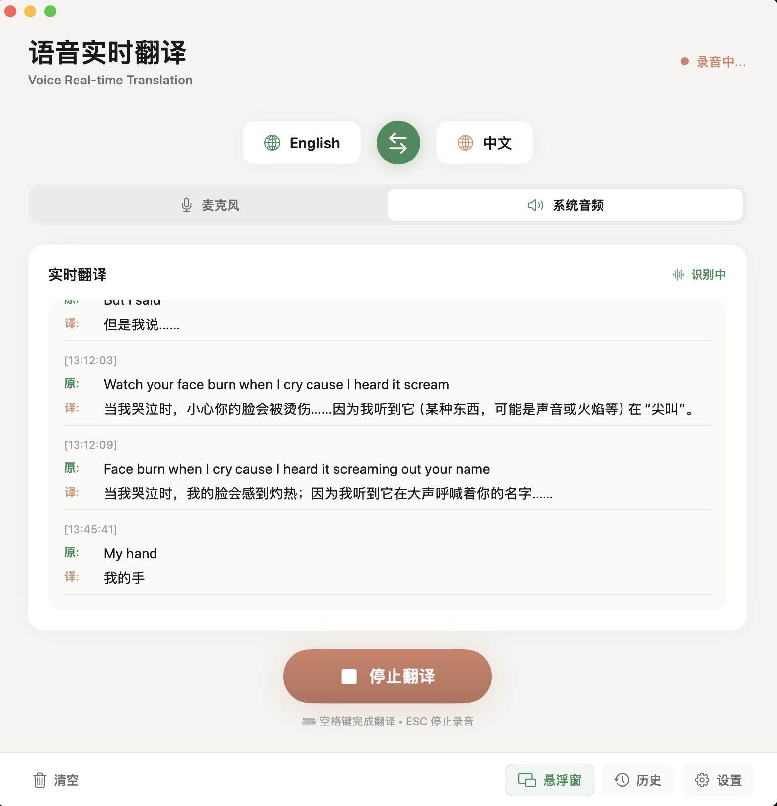
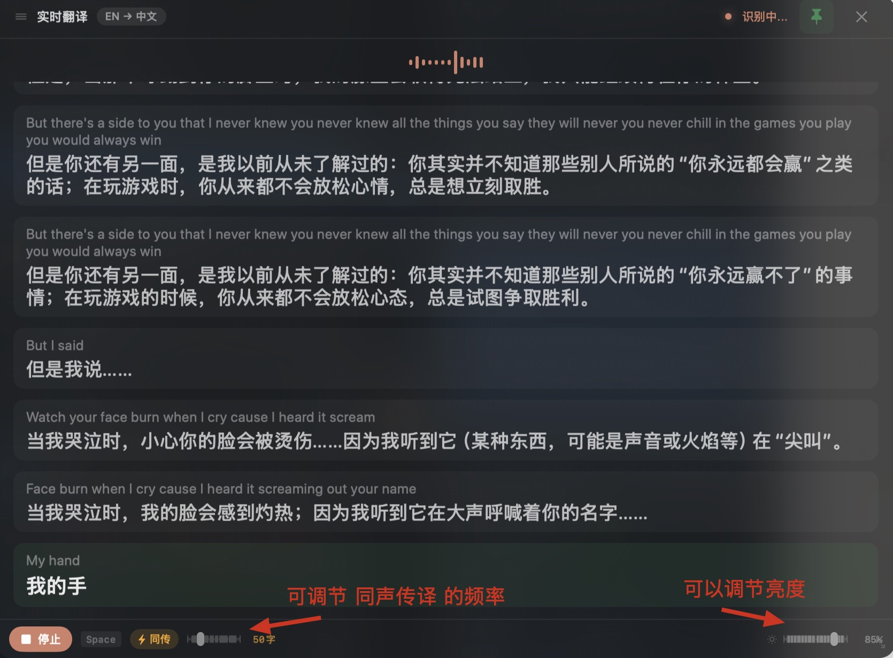

沟通效率提升
减少重复确认和手动解释，会议与协作决策更快达成。
实时 · 低延迟 · 多语言
Voice Real-time Translation 为 macOS 原生打造：边说边转写、边听边翻译， 低延迟输出，让跨语言会议、远程沟通和内容创作不断线。
价值点
减少重复确认和手动解释，会议与协作决策更快达成。
在常规场景替代部分人工同传，支持规模化跨语言协作。
通过统一接口与词库策略，确保不同业务线沟通质量一致。
使用场景
发言实时转写与翻译，参会者可用熟悉语言同步理解讨论内容。
客服与用户双向语音互译，减少沟通摩擦并提升首次解决率。
讲师语音内容即时转为多语言字幕/语音，提升课程可达性。
在销售演示、需求访谈和项目交付中保持顺畅交流体验。
功能清单
通过流式管道连接识别、翻译与播报模块，结合上下文缓存与错误回退机制，实现更稳定的实时翻译体验。
适用于产品验证、内部试点与逐步规模化上线。
产品截图与演示
包含真实截图与演示视频，展示 VRT 在真实沟通场景下的使用体验。
素材托管于 Google Drive，可随时替换为最新版本。


下载地址：VoiceTranslation.dmg
FAQ
当前落地页示例面向 Web 场景，实时翻译需要下载客户端安装后使用，暂不支持通过浏览器接入。
延迟取决于网络、语言对与模型配置。通常可通过流式策略将等待时间控制在可对话范围内。
可以。功能清单中的 API/SDK 接口即为系统集成预留，适合嵌入客服、会议和业务流程系统。
支持通过词库与上下文策略进行术语优化，建议结合具体业务语料持续迭代。
Try Voice Real-time Translation on macOS and make every multilingual conversation instantly understandable.
Try It Now